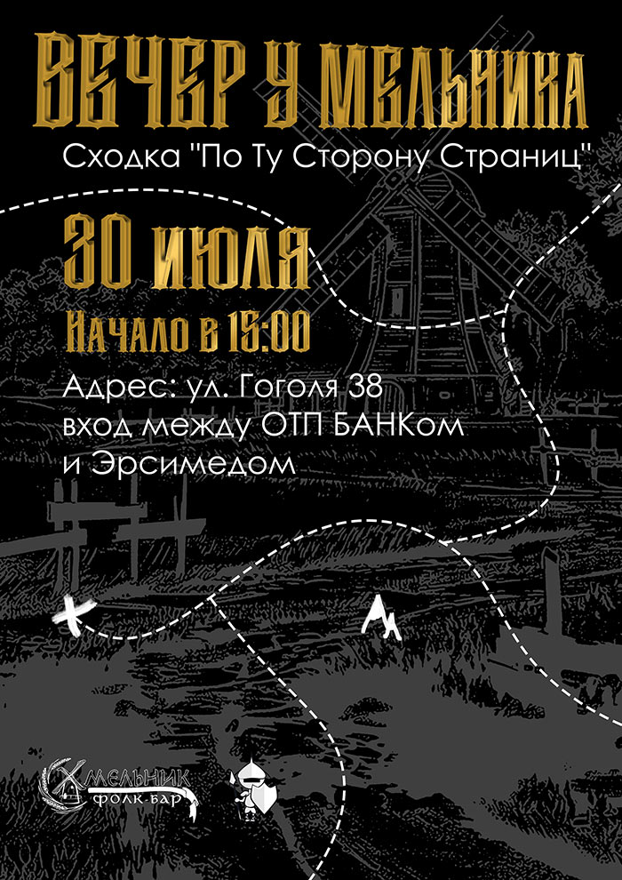

Увидимся в Новосибирске!
ПЕРВАЯ СХОДКА ДЛЯ ЗРИТЕЛЕЙ ПРОЕКТА
Вас всё больше и больше, дорогие приключенцы. Мы решили порадовать и удивить Вас.
У нас появилась замечательная Frida Lynch , спонсор конкурса, мастер работы по коже. В Фолк-бар "Хмельник" вы все и встретитесь.
Готовится интересная программа, с лотереей и концертом.
Приключение начинается в 15-00.
ВХОД БЕСПЛАТНЫЙ! (https://vk.com/dndpotustoronu?w=wall-202389657_5911)

Учитывая все события, мы очень рекомендуем подписаться на наш телеграмм. Чтобы всегда быть на связи с проектом, и видеть новости: https://t.me/dndpotustoronu
Партнёр: По Ту Сторону Страниц